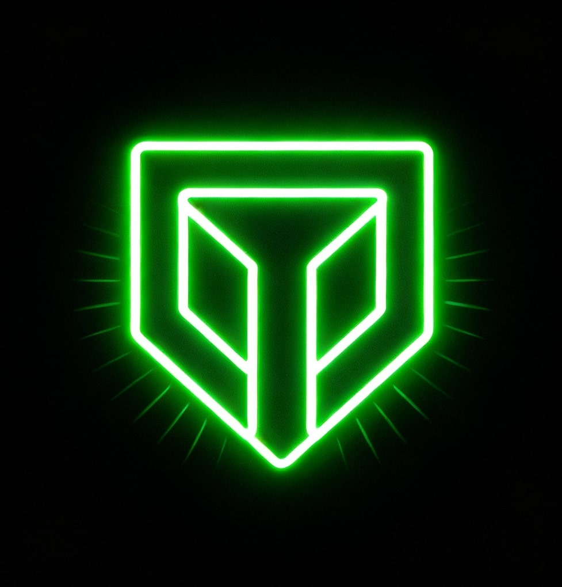

Home
About Me
Gallery
Inner Circle

Know about my self
Name:
Mohan Dasarath Ram
Date of Birth:
25-07-2009
Age:
Lives in Vizag, Andhra Pradesh
Preparing for JEE 2026
Interested in Space Tech
🎬 Fav Actor: Cheeyan Vikram
>>>>>>> a8c2056 (My futuristic website launch 🚀)